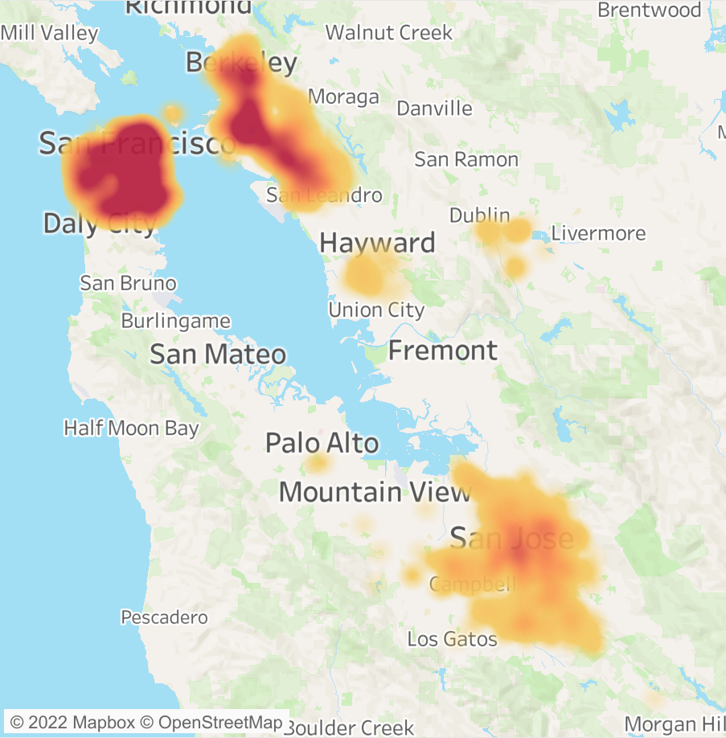

After an unfortunate incident wherein the quarter window of our brand new car was smashed into bits during an attempted robbery (and during a global inventory shortage!!), I decided to analyze auto crimes over the past 90 days in the main cities of Bay Area in California. The data was obtained from various police departments' open data initiatives. The longitude and latitude coordinates were generated from the recorded addresses using Google Maps API in R. This can now help us to identify problematic areas that we should think twice before parking!
Bellabeat is an up and coming high-tech manufacturer of health-focused products for women. As part of Google Data Analytics Certification capstone project, I analyzed the fitness tracker data to provide recommendations to the marketing team to unlock new growth opportunities. Data was obtained from Kaggle FitBit Fitness Tracker datasets. Cleaning, analyzing and visualizing were performed using R, and the entire process was captured in an R Markdown file.
To understand the gaming app preferences of our friends and family, I conducted a survey on behalf of our company. The data obtained was cleaned, analysed and visualized in Excel to better understand our immediate audience. The insights derived helped to identify what aspects to focus on and create games that appeal to the audience.
Covid-19 data from OurWorldInData was analyzed to find the total number of cases and vaccination stats. Country level stats also include total cases, total deaths, infection rate, fatality rate, fully vaccinated and partially vaccinated population. Also find the top 10 best/worst countries in each of these parameters. Data cleaning and analyzing was done in SQL and visualizations was done in Tableau.

Navigate to my Tableau profile to find all the visualizations created as part of various projects.